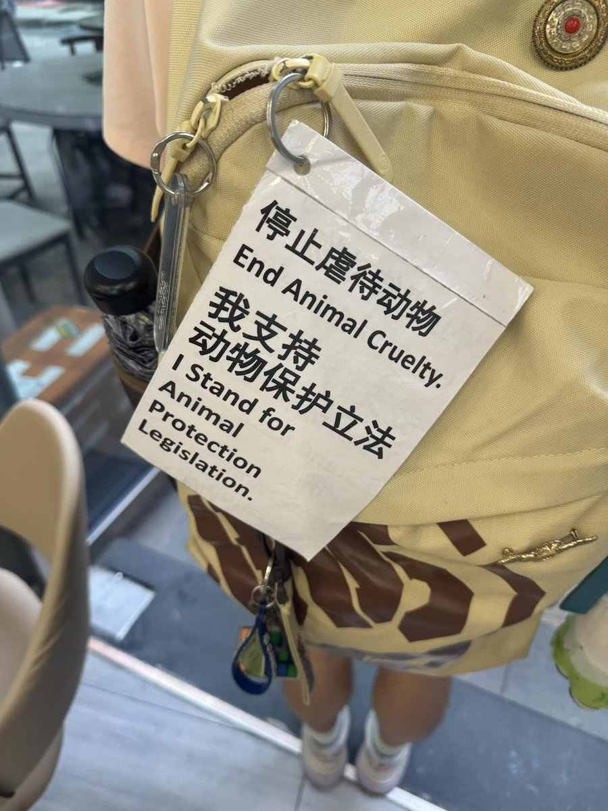

只能说人权都还没保护呢就在这提动物权益真的有点空中楼阁了
狐支持立法禁止虐杀流浪动物
同时支持呼吁各地人民政府与公共卫生部门挑起这个现在由正义人民群众顶着的担子，尽责履行城市流浪动物控制消杀职责
最后，狐支持境内自然人对于自己持有饲养的活体资产享有无限控制权与处置权，但严格禁止遗弃与放生活体动物

狐支持立法禁止虐杀流浪动物
同时支持呼吁各地人民政府与公共卫生部门挑起这个现在由正义人民群众顶着的担子，尽责履行城市流浪动物控制消杀职责
最后，狐支持境内自然人对于自己持有饲养的活体资产享有无限控制权与处置权，但严格禁止遗弃与放生活体动物

7月18日，有网友发帖称，其与朋友在乘坐地铁时，因随身携带写有“停止虐待动物”“支持动物保护立法”的挂牌，被安检员拦下。
据当事人描述，安检员没有指出其存在违法行为，只表示“关于宣传广告内容不允许”“没有违法，就是要报备”，并反复询问两人“是哪个单位的”“是不是单位弄的”。 https://t.co/aSU146FJIv
据当事人描述，安检员没有指出其存在违法行为，只表示“关于宣传广告内容不允许”“没有违法，就是要报备”，并反复询问两人“是哪个单位的”“是不是单位弄的”。 https://t.co/aSU146FJIv